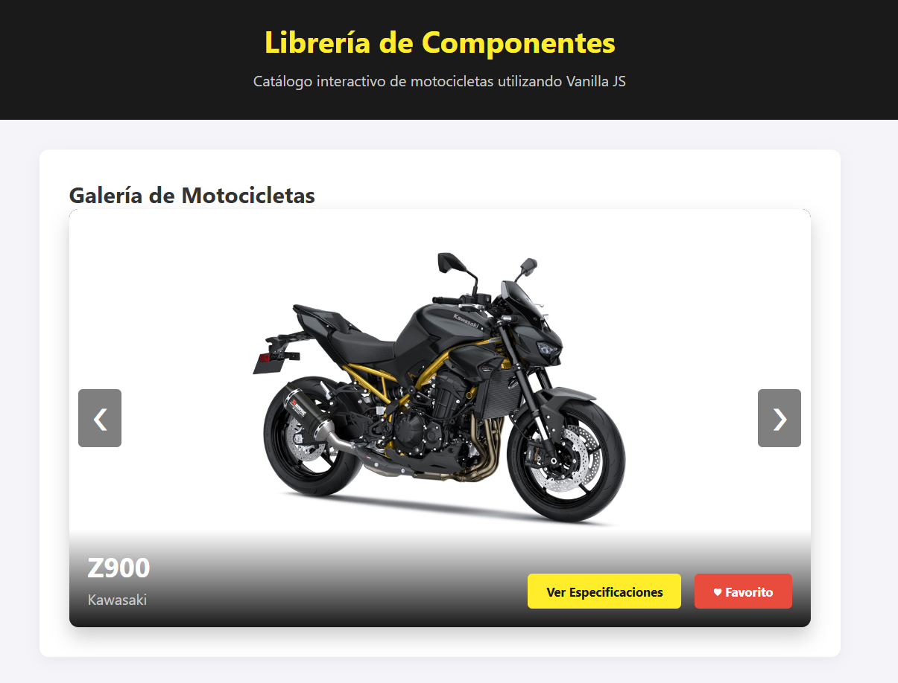
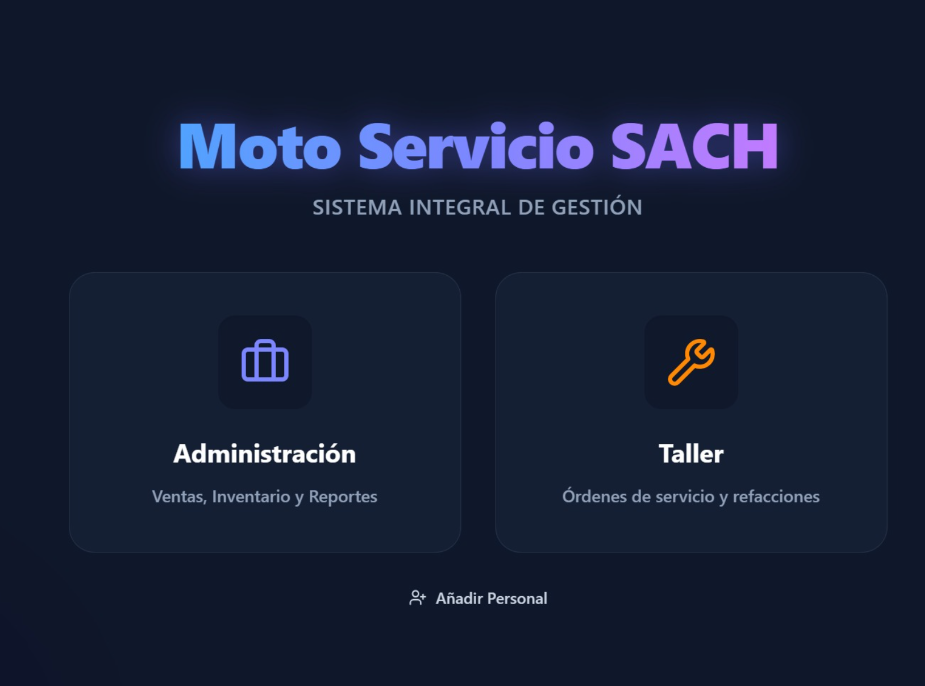

Contacto
¿Desarrollamos algo juntos?
Estoy abierto a colaborar en proyectos de ingeniería de software, arquitectura de bases de datos y nuevas oportunidades tecnológicas. ¡Hablemos!
Estudiante de Ingeniería en Sistemas Computacionales en el ITO. Apasionado por la arquitectura de bases de datos, redes e infraestructura tecnológica.

Estudiante apasionado, que les puedo decir

Soy estudiante de Ingeniería en Sistemas Computacionales con un fuerte enfoque en el backend, la administración de bases de datos y la simulación de redes. Me apasiona resolver problemas lógicos y estructurar soluciones eficientes desde sus cimientos.
Disfruto trabajar tanto con lenguajes de bajo nivel como ensamblador x86, hasta el desarrollo full-stack moderno, siempre buscando optimizar el rendimiento y aprender nuevas tecnologías.

Desarrollo de interfaces dinámicas e interactivas utilizando HTML, CSS y Vanilla JavaScript sin depender de frameworks pesados.
90%Administración, arquitectura y replicación en motores relacionales y NoSQL como PostgreSQL, MongoDB y Redis.
90%Desarrollo de algoritmos y estructuras de datos utilizando C++, Java y lenguajes lógicos como Prolog.
80%Diseño, configuración y simulación de topologías de red, VLANs y enrutamiento utilizando Cisco Packet Tracer y AWS.
55%Resumen de mi trayectoria académica y proyectos destacados en la ingeniería de software.
Desarrollo de sistemas, bases de datos y protocolos de investigación.
Desarrollo e implementación de una aplicación web para la gestión de servicios, inventario y citas de un taller de motocicletas, utilizando React y Firebase.
Creación de diagramas de clases UML y modelos Entidad-Relación para un calendario agrícola digital.
Formulación de metodología y especificaciones técnicas para un sistema de rastreo de recolección de basura municipal en Santa Lucía del Camino.
Formación académica en ciencias de la computación e infraestructura tecnológica.
Especialización en programación backend, arquitectura de bases de datos relacionales y NoSQL, y diseño de redes informáticas con simuladores como Cisco Packet Tracer.
Galería de proyectos académicos, desarrollo web y protocolos de investigación.

Librería de componentes visuales interactivos construida 100% en Vanilla JavaScript.

Aplicación web Full-Stack local para gestión de servicios y citas de taller de motocicletas.
Propuesta de metodología y rastreo para recolección de basura municipal en Santa Lucía del Camino.
Diseño de arquitectura de software y diagramas Entidad-Relación para un calendario agrícola digital.
Estoy abierto a colaborar en proyectos de ingeniería de software, arquitectura de bases de datos y nuevas oportunidades tecnológicas. ¡Hablemos!